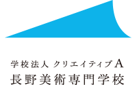
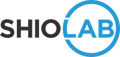

こんにちは世界！
長野県で2回目となる Rails Girls Nagano を開催します!
Ruby on Rails のすてきな世界を私達と一緒に体験しましょう！
2日間のワークショップは無料です。
お気軽にご参加ください。
参加者の募集を開始しました！
2019年4月26日(金) 12:00 までにこちらからご応募ください。
応募が多い場合は抽選となります。ご了承ください。
概要 コーチに教えてもらいながらプログラムを設計して、プロトタイプを作り、コーディングします。
必要なもの 自分のノートパソコンとやる気、そしてキラリと光るイマジネーションを持ってきてください！
コーチ募集中！
Rails Girls Naganoでは現在コーチを募集しています。
こちらからお問い合わせ下さい。
| 18:00 - 21:00 |
インストール・ディ1日目はご自分のパソコンにRubyとRailsをインストールして、土曜日のワークショップの準備を行います。 Rubyプログラミングの最初の一歩をコーチとともに始めてみましょう。 |
|---|
| 9:00 - 10:00 |
レジストレーション、コーヒー金曜日のインストールが終わらなかった場合やトラブルがあった場合は、朝のうちに解決しておきましょう。 金曜日にすべてうまく行った方は参加しなくてもOKです。9:30ごろからのんびりきてください。 |
|---|---|
| 10:00 - 10:30 |
開会一日の流れの説明。オーガナイザーから一言。Friday Hugs! |
| 10:30 - 12:00 |
ワークショップ : ウェブアプリの構築ワークショップはチームで行います。最初に同じチームのみんなに自己紹介をしましょう!そして、はじめてのウェブアプリにトライしてみましょう！ |
| 12:00 - 13:00 |
ランチ |
| 13:00 - 13:30 |
スポンサーLT |
| 13:30 - 16:00 |
ワークショップ : ウェブアプリの構築午前中の続きを行います。余裕のあるひとは、アプリを自分の好きなように変えてみましょう！ |
| 16:00 - 18:00 |
アフターパーティー & コーチによるライトニングトークス参加者、コーチ、スタッフによるパーティです。ワークショップで聞き損ねたことやRubyやRailsのこと、ステップアップの方法など、コーチに気軽に質問してみましょう。 |
会場:
長野美術専門学校
〒380-0935 長野県長野市中御所1丁目10-10
Rails Girls Nagano をご支援いただけるパートナーを募集しています！ こちらのフォームからお問い合わせください。
Rails Girls Naganoは以下のすばらしいパートナーとの共同開催です。
 長野美術専門学校は来年で創立50年を迎えます。 専修学校の専門課程がいわゆる専門学校と呼ばれ、高卒以上で入学できます。長野県では美術の専門学校はここひとつだけ。 教育課程は創立当時からデザイン科が主で、1000人を超える卒業生を送り出しています。 もっと見る
 GMOペパボ株式会社は「もっとおもしろくできる」を企業理念に、
自分だけのオリジナルグッズを手軽に作成・販売できる「SUZURI」や
国内最大のハンドメイドマーケット「minne」など様々なサービスを提供しています。
RubyやRailsを採用した開発環境で「いるだけで成長できる環境」をコンセプトにエンジニアの人材育成やコミュニティへの支援を積極的に行っています。
GMOペパボ株式会社は「もっとおもしろくできる」を企業理念に、
自分だけのオリジナルグッズを手軽に作成・販売できる「SUZURI」や
国内最大のハンドメイドマーケット「minne」など様々なサービスを提供しています。
RubyやRailsを採用した開発環境で「いるだけで成長できる環境」をコンセプトにエンジニアの人材育成やコミュニティへの支援を積極的に行っています。
 株式会社シオラボは長野県塩尻市にあるソフトウェアの会社です。 Webシステムの構築・運用・保守、ホームページの制作、IoT開発、小中高生向けプログラミング教室開催などをしています。 得意分野は Ruby, Ruby on Rails です。
 私たち永和システムマネジメントは Ruby や Ruby on Railsを活用したアプリケーションをアジャイルに構築できる日本有数のソフトウェア受託企業です。私たちはお客さまの投資を最大化すべく研鑽を続けています。また、Rubyコミュニティの支援も2006年から積極的に行っています。
私たち永和システムマネジメントは Ruby や Ruby on Railsを活用したアプリケーションをアジャイルに構築できる日本有数のソフトウェア受託企業です。私たちはお客さまの投資を最大化すべく研鑽を続けています。また、Rubyコミュニティの支援も2006年から積極的に行っています。
 リンクアンドモチベーションは、世界初の「モチベーション」にフォーカスした企業です。これまでは組織人事コンサルティングや研修を提供する企業でしたが、これからは「すべての組織と個人の変革」に向けてテクノロジー企業に転換しようとしています。
この第二創業期を共に創って頂けるエンジニア・プロダクトマネジャー・デザイナーの方々を積極募集しています。
リンクアンドモチベーションは、世界初の「モチベーション」にフォーカスした企業です。これまでは組織人事コンサルティングや研修を提供する企業でしたが、これからは「すべての組織と個人の変革」に向けてテクノロジー企業に転換しようとしています。
この第二創業期を共に創って頂けるエンジニア・プロダクトマネジャー・デザイナーの方々を積極募集しています。
 GitHub はソフトウェアの共同開発をするための最高の環境を開発・提供しています。1000 万人以上のユーザーが友だち、同僚、クラスメートと、時にはまったく知らない人とでさえ、コードなどを共有して素晴らしいプロジェクトを行っています。
GitHub はソフトウェアの共同開発をするための最高の環境を開発・提供しています。1000 万人以上のユーザーが友だち、同僚、クラスメートと、時にはまったく知らない人とでさえ、コードなどを共有して素晴らしいプロジェクトを行っています。
 日本Rubyの会は、Rubyの利用者の支援とRuby(とRubyのライブラリ)開発者の支援を目的とした一般社団法人です。現在は、ドキュメントの整備や、イベントへの参加協力等を中心に活動しています。
日本Rubyの会は、Rubyの利用者の支援とRuby(とRubyのライブラリ)開発者の支援を目的とした一般社団法人です。現在は、ドキュメントの整備や、イベントへの参加協力等を中心に活動しています。
参加費はどのくらいかかりますか？
無料です。申し込むときにはわくわくした気持ちだけあればOKです。
どのような人が参加するのでしょうか？
コンピュータを使ったことがある女性ならだれでも参加できます。
また、これまでに開催されたRails Girlsイベントには様々な年齢の女性が参加しています。
ただし、ワークショップは初心者の方向けの内容ですので、プログラミング経験者の方にはもの足りないかもしれません。
男性も参加できますか？
参加できます。ただし、プログラミングやウェブアプリを作ることに興味のある女性と一緒に応募してください。
申し込み人数が多い場合はお断りすることがあります。
プログラミングの経験があります。手伝うことはできますか？
はい！Rails Girls Nagano ではコーチとしてお手伝いしてくださる方を募集しています。
お手伝いいただける方はこちらからお申し込みをお願いいたします。
 Sumiko Yamasaki
Sumiko Yamasaki Chie Kobayashi
Chie Kobayashi Kazue Sunohara
Kazue Sunohara